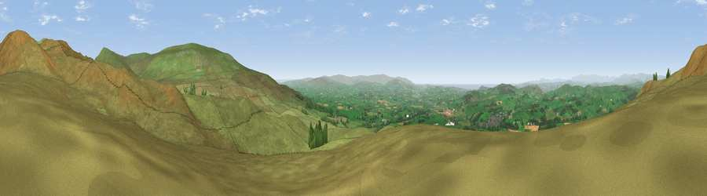

Viewpoint near Casterton
#4470 in England · top 12% of its area beats it · near CastertonWhere it is
The exact computed spot (SD 64675 79875). Click the marker for map links.
The view, rendered

A 360° render of this exact spot computed from the terrain model, tree cover and land cover — summer colours, afternoon light, calibrated against photographs of famous viewpoints. Real trees, hedges and buildings will differ in detail.
The panorama
Grey silhouette: terrain skyline in each direction (720 bearings, Earth curvature and refraction included). Dashed green: skyline with trees (+15 m) and buildings (+8 m) as obstacles. Blue strip: how far the ground is visible on each bearing.
Where the view opens
Wedge length = distance to the farthest visible ground on that bearing (vegetation-aware). Rings at 10, 25 and 50 km.
What fills the view
92% grassland · 6% woodland ·
Angular shares of the visible panorama (visual magnitude), not map area. Landscape diversity 0.15 (0–1 Shannon).
Key numbers
More beautiful places nearby
The staircase of upgrades: each row has a higher view potential than everything closer. Driving times are estimates from straight-line distance, calibrated against real road routing — check an actual route before setting out.
| Place | Direction | Drive | Score |
|---|---|---|---|
| Brownthwaite Pike | N · 1 km | ~2 min | 76.8 |
| Barbon Low Fell | NNE · 1 km | ~3 min | 77.9 |
| Viewpoint near Middleton | N · 5 km | ~10 min | 78.2 |
| Crag Hill | NE · 6 km | ~12 min | 80.0 |
| Warton Crag | WSW · 17 km | ~30 min | 83.2 |
| Viewpoint near Grange-over-Sands | W · 25 km | ~41 min | 83.4 |
| Viewpoint near Finsthwaite | WNW · 27 km | ~43 min | 90.3 |
| The Knoll | S · 392 km | ~376 min | 91.0 |
54.21338, -2.54316 · source: screening · position refined by local search. Computed location — check access rights before visiting.